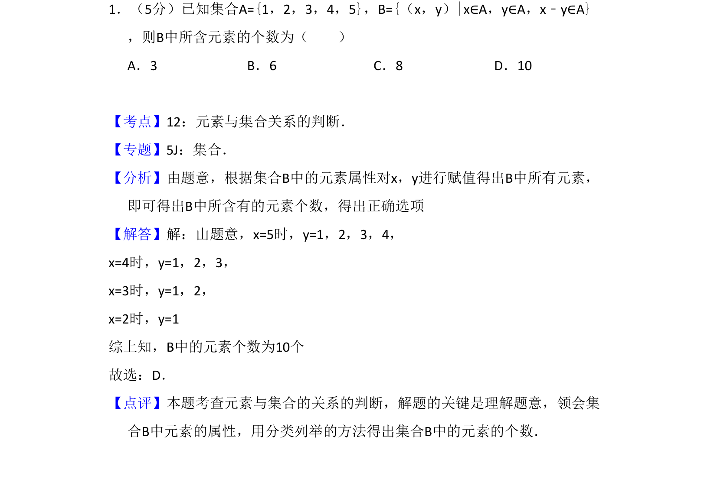
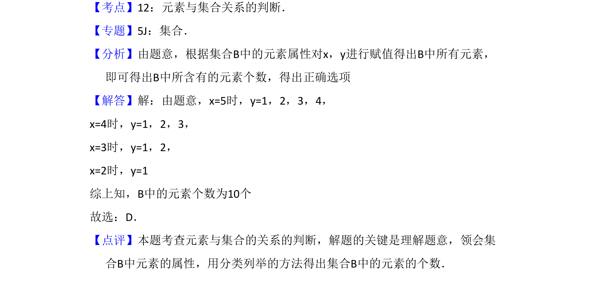

考点：元素与集合关系 集合表示法 分类讨论

本题考查通过集合描述法确定元素个数，需分类列举满足条件的x、y值。

📄 原 PDF 第 1 页：
素材/真题/吉林/2008-2024·（吉林）数学高考真题/2012年高考数学试卷（理）（新课标）（解析卷）.pdf
1．（5分）已知集合A={1，2，3，4，5}，B={（x，y）|x∈A，y∈A，x﹣y∈A} ，则B中所含元素的个数为（ ） A．3 B．6 C．8 D．10
【考点】12：元素与集合关系的判断．菁优网版权所有 【专题】5J：集合． 【分析】由题意，根据集合B中的元素属性对x，y进行赋值得出B中所有元素， 即可得出B中所含有的元素个数，得出正确选项 【解答】解：由题意，x=5时，y=1，2，3，4， x=4时，y=1，2，3， x=3时，y=1，2， x=2时，y=1 综上知，B中的元素个数为10个 故选：D． 【点评】本题考查元素与集合的关系的判断，解题的关键是理解题意，领会集 合B中元素的属性，用分类列举的方法得出集合B中的元素的个数．